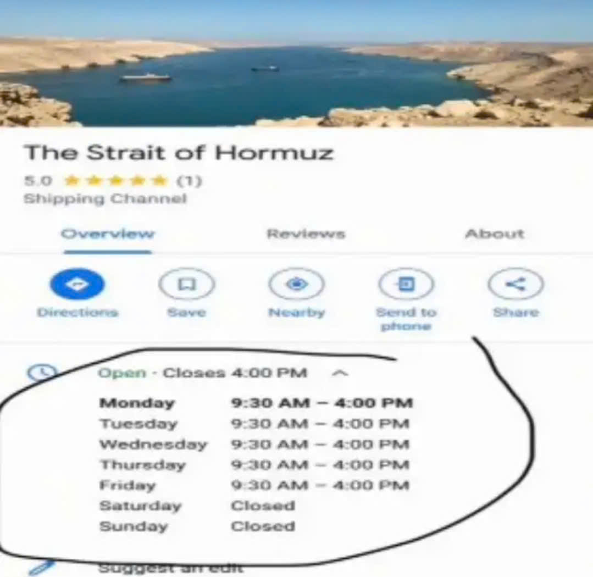

Random stuffs 9th
Xin chào / Hello / Здравствуйте!
This is the ninth entry of Random stuffs, which belongs to April 2026!
Unlike the last Random stuffs entry, this one will bring you information! Wait, does it sound energetic? Well anyways, let's go!
The current situation in Iran
Protests and massacres
As you may know, there have been protests against the Iranian government since the end of 2025. So, have they ended? Probably, as I've checked the «2025–2026 Iranian protests» article on Wikipedia and they use the word «were» and other past sense words. That said, I don't think all of the protesters gave up, there should be some that are still protesting.
«So, what's the result?» you may ask. Well, they failed. Of course Iran did very well in supressing the protesters, though I think the war in Iran has also caused the protesters to stop.
The 2026 Iran war
Since 8 April, Iran and the US have entered a ceasefire. Of course Israel is still striking and getting struck as they are not part of the deal. Well, I don't know how much time does this brief peace last, but it's good.
«Is the Strait of Hormuz opened now?» prolly no. While Iran did say they would re-open it, they didn't because the US still continues their blockade of Iran. Yep, the US Navy also blockades Iranian ports since 17 April.

Oh wait DOESN'T THE STRAIT OF HORMUZ OPEN FROM 09:30 TO 16:00 ON WEEKDAYS LIKE WTF
30 April
Yesterday was 30 April. If you don't know, it's the Reunification Day in Vietnam. It marks the end of the South Vietnamese government and the Vietnam war.
So... Chúc mừng 51 năm ngày Giải phóng miền Nam thống nhất đất nước (muộn hơn 1 ngày :v)!
By the way, it was the same date (though different year) when Hitler committed suicide and the Soviets raised their flag over Nazi Germany's Reichstag.
There could be more information that I'd like to bring you but since I'm bored, this is the end for the ninth entry of Random stuffs. Bye, and good luck passing the Strait of Hormuz during office hours!